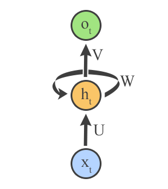
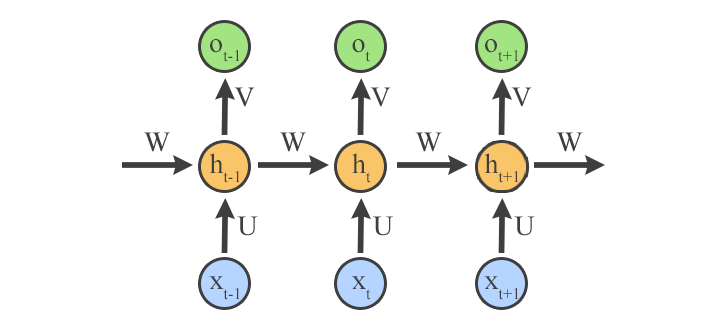
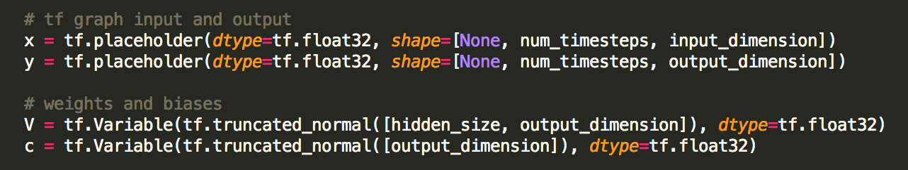
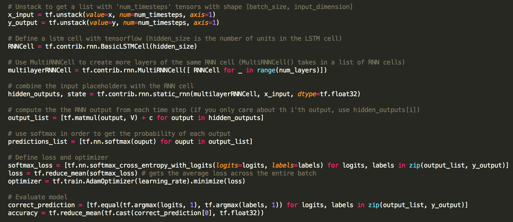
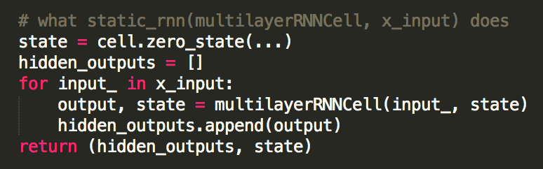
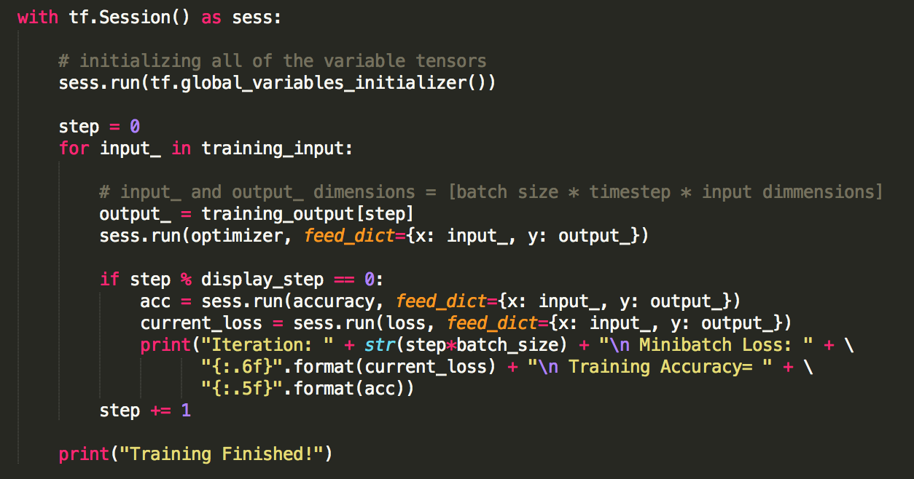

Beginners Guide to RNNs in TensorFlow!
August 27, 2017 | 10 min read
What is a Recurrent Neural Network (RNN)?
RNNs are similar to
Feedforward Neural Networks, but a RNN is used to process sequential data, where things that have happened in the past could have an effect on the future. For instance if you want to predict what will be the next word in a sentence, you will want to know which words have already appeared in the sentence. A RNN is able to work with sequential data like this because it has cycles in its computational graph which send information from the "past" to the "future". This way an RNN is able to have a “memory” of what has been seen thus far. This graph is depicted in figure 1.

Figure 1: The input comes in through the blue neuron, which is then processed by the hidden orange neuron, which sends output to the green neuron and back to itself. U, W, and V are weight matrices that are used in the computation. They are called input-to-hidden, hidden-to-hidden, and hidden-to-output connections respectively.
It is easier to visualize what is happening if we “unroll” this graph. Unrolling simply means to show every computation that will occur when the RNN is ran. In figure 2 you can see an unrolled graph for time steps t-1, t, and t+1 where t is the current time step.

Figure 2: Unrolled RNN. Some of the output from the hidden neuron ht-1 is used as input to the hidden neuron at t.
As you can see from the unrolled graph, we use the same weight matrices V, W, and U throughout every computation. This is known as parameter sharing. At each time step we use the same parameters to compute what the next element in the sequence will be. This allows us to use the model on varying length sequences. In order to understand this, think about the alternative. We would need to have different weight matrices at each time step. With different weight matrices, we would only be able to test on data with the same sequence length. To see this, imagine you wanted to test your RNN on sentences of length 20 but you had only trained your model on sentences of length 15. The last 5 time steps of your RNN would not have been learned so your model would not know what to do for those last 5 time steps. With parameter sharing, while training on sentences of length 15, you learn 3 weight matrices, V, W, and U for every time step. Now when you go to test on sentences of length 20, you will be using those same 3 weight matrices that have been learned in your calculations.
Parameter sharing also allows us to recognize patterns in the data when those patterns occur at different time steps. To see this, think if we didn’t have parameter sharing, but instead we used different weight matrices at each time step while trying to predict the next word in a sentence.
Example: If we were presented with two examples to learn from, “Alan Turing was a genius.” and “What did Alan Turing do?”, seeing ‘Alan’ then ‘Turing’ in the first sentence would not help us at all in the second sentence when trying to predict which word comes after ‘Alan’. This is because the weight matrices in the 1st and 2nd positions that learned 'Turing' comes after 'Alan' (from the first sentence) would not be used when looking at the words in the 3rd and 4th positions (where 'Alan Turing' appears in the second sentence). However, with parameter sharing, the positioning of the words in the sentence would not matter. Each transition between words learns the same matrices regardless of positioning in the sentence. Additionally, parameter sharing means we need to learn less parameters which makes the learning process quicker.
Mathematically how does an RNN work?
eq 1: a
t = b + W*h
t−1 + U*x
t
eq 2: h
t = tanh(a
t)
eq 3: o
t = c + V*h
t
eq 4: y
t = softmax(o
t)
We begin with equation 1 where we use our input from the current time step, x
t, along with the state from the previous hidden layer, h
t-1, to get a
t. b, as well as c in equation 3, is a bias term.
Why do we need a bias term? In equation 2 we use an activation function, tanh in this example, on a
t to get the value for our current hidden state, h
t. The tanh function squashes the input to a value between -1 and 1, and it allows for the model to learn non-linear models.
How? In equation 3, we multiply our current hidden state with the hidden-to-output weight matrix, V, to obtain our output, o
t. In equation 4 we take the softmax of the output to obtain normalized probabilities of the output. The softmax function takes a list of numbers and squashes them so that all numbers in the list add up to 1.
What are the dimensions of these variables?
x [
n x
b]
U [
m x
n]
h [
m x
b]
W [
m x
m]
V [
k x
m]
o [
k x
b]
n depends on your data. For instance, if your input was
one hot encoded word vector with a dictionary size of 5,000, your input dimension would be 5,000 (the length of the vector). If your input was just a single number with values ranging from 0 to 10, your input dimension would be 1 (the dimension of a single number). Specifically, n is equal to the number of features in your data.
b is your
batch size.
m is the size of your hidden layer. It can be chosen to be whatever you desire, but a general rule of thumb is to have m be somewhere between the size of your input (n) and the size of your output (k)
k is determined by what type of problem you are solving. If you are solving a classification problem (such as deciding a student's grade, A+, A, A-… ) then k will be the number of classes. If you are solving a regression problem (such as a predicting a student’s GPA), k will be 1.
What is TensorFlow and How does it Work?
TensorFlow is an open source framework that runs on Python, Java, and C++. It allows you to easily implement a Neural Network without having to worry about most of the math involved.
What are Tensors?
Tensors are basically just arrays/vectors/lists of any dimension. All values in TensorFlow are in a tensor. So if you just wanted to represent the value 10, you would have a 1-dimmensional tensor which has the value 10 in it: [10].
How do you download and run TensorFlow?
Go to
TensorFlow's wesbite and follow instructions.
What are variables and placeholders?
In TensorFlow, there are a few main types of tensors that you can create. The two that are important to create an RNN are variables and placeholders. Variables allow for values inside of the tensor to change. The weight matrices will be variable tensors, otherwise how would our model learn?
Placeholder tensors are exactly what they sound like. They are a tensor that hold a place in our model which will later be filled with some value that we assign to it. Placeholders are helpful when feeding input into the model. The values of the input will change with each example we run, but the location of the input in our model will be the same for each example.
How do you setup a RNN in TensorFlow?
We will first setup our placeholders that will contain values for the input (x) and output (y) of each example. The “None” dimension of these tensors corresponds to the batch size. We will also create two variable tensors that will be used as the weight and bias matrices. These variables are initialized with a “truncated normal” distribution which means that values more than 2 standard deviations away from the mean will be recalculated.

Truncating the weight matrices’ values makes your network learn quicker compared to having many values of the matrices outside the truncated range. If you allowed for values greater than 2 standard deviations away from the mean and used an activation function such as a sigmoid (where the function is basically flat at values greater than 2), then when updating your weights, the gradient will be very small which means it will take much longer for your matrices to learn.
To create the RNN we can use one of the many RNN types of cells that TensorFlow provides. I will use an LSTM (Long Short Term Memory) cell because those have been shown to retain information for a longer period of time. See
here if you want to know more about why this is true. Below is the code for actually setting up the RNN.

The input and output had to be unstacked to the correct dimensions that static_rnn accepts [number of time steps x batch size x input dimension]. If you will be working with data where the number of time steps varies for each example, you will want to use
dynamic_rnn instead of static_rnn. You can avoid unstacking your input if you provide the correct dimensions initially (with my data set it was easier to unstack here). static_rnn() needs these dimensions because it works as follows.

How do you run a RNN in TensorFlow?
It is important to note that up until this point, the RNN has not been executed. We have simply set up the structure our RNN. In order to make our RNN learn, we must run our RNN on a TensorFlow Session. A session encloses the information necessary for the RNN to be executed. Sess.run() takes in a node of our computation graph (optimizer in this example), and a dictionary that contains any placeholder values that the node is dependent on.

In the example above we are just training our model. To test it, you would simply make another for loop but with test_input rather than training_input and use the same TensorFlow session when evaluating the test_input (because the session contains the RNN information, such as the weight matrices which we have just learned).
What now?
I did not use a specific example when making this walk through because I wanted the code to be understandable when you use your own data that may be of a different form or where you only need certain outputs from your model. Use this as an outline to create a RNN to fit your sequential task at hand and please
reach out to me with any questions!